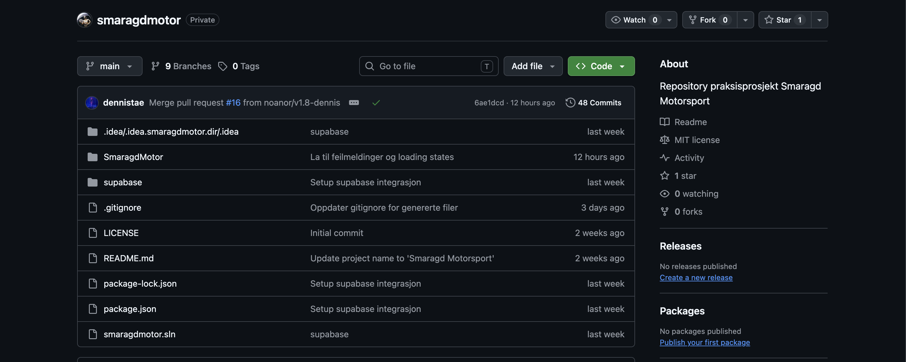
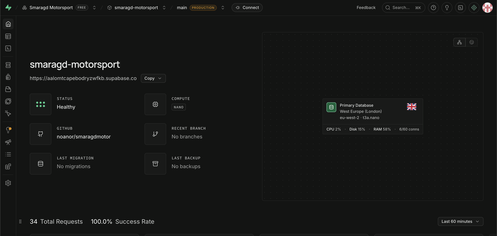
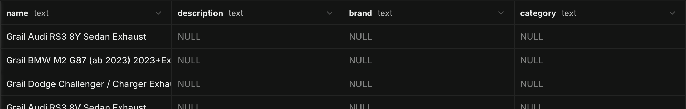
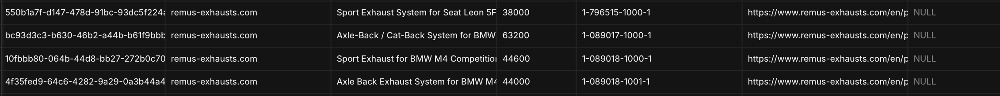

Statusrapport 1
Planleggingsfasen nærmer seg slutten, men noen utfordringer med produktdataene gjenstår å løse før utviklingen kan ta av for alvor. Her ser vi på hvor vi står, hva som er på plass og hva som venter.
Sist oppdatert: 18.09.2026
Kort oppsummert
- Planleggingsfasen er snart ferdig, og ansvarsområdene er fordelt mellom gruppemedlemmene.
- Supabase-databasen og GitHub-repoet er satt opp og klare til videre utvikling.
- Flere felt i datasettet mangler informasjon (description, brand og category), og vi er i dialog med kontaktpersonen vår om hvordan det skal løses.
Prosjektstatus
Vi begynner nå å bli ferdige med planleggingsfasen av prosjektet. Ansvarsområdene er fordelt mellom gruppemedlemmene, og vi har fått en tydeligere oversikt over hvordan prosjektet skal utvikles videre. Dette gjør det enklere å gå over i utviklingsfasen med klare oppgaver og mål for hver del av løsningen.


Utfordringsområde
Flere felt i datasettet mangler informasjon, blant annet description, brand og category. Dette er et problem fordi disse feltene brukes til søk og filtrering av produkter, og manglende data gjør at produkter kan bli vanskelige å finne eller vises med ufullstendig informasjon. Vi er i dialog med kontaktpersonen vår for å få skaffe bilder fra en av leverandørene, men hvordan description, brand og category skal fylles inn er fortsatt ikke avklart.

